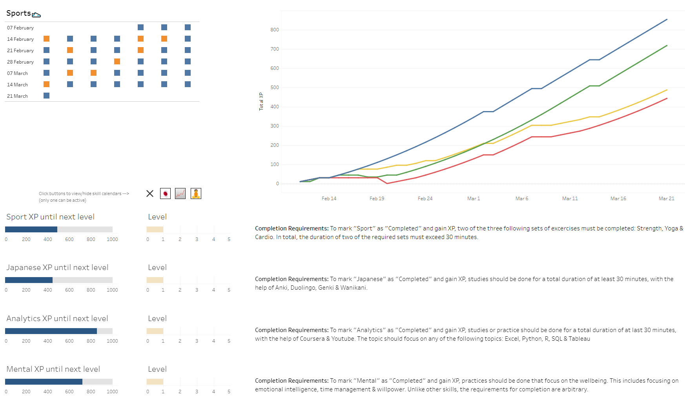
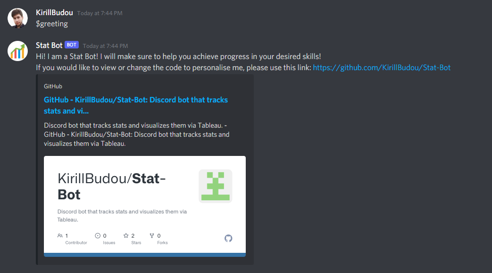
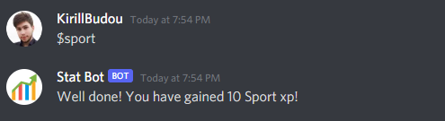
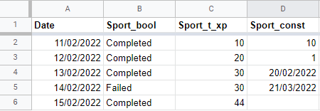
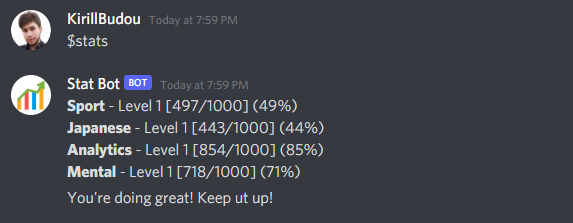
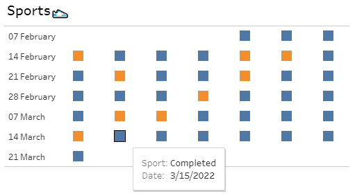
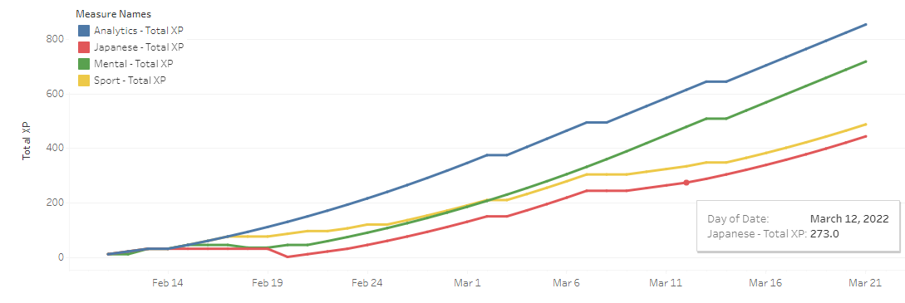
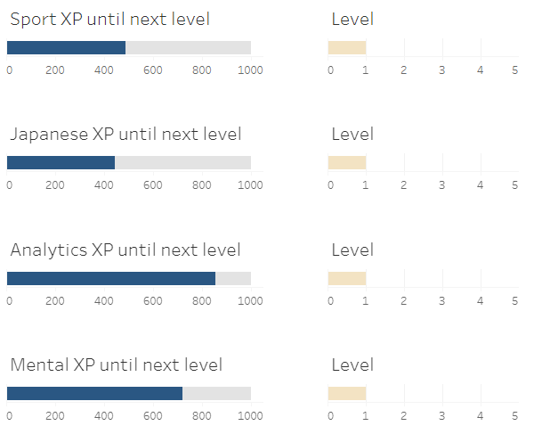

Intro
Thank you for showing your interest in me. My name is Kirill Vinogradov, and I have been living in Malta since 2013. I have graduated with the masters degree from the University of Malta, and now I am actively seeking employment where I can realise myself as a Data Analyst.
I am constantly pursuing the idea of effectiveness, where I have found my love for data. The unique insights that data can present helped me improve the quality of my life by a huge margin, and now, I would like to apply my skills on a larger scale, helping businesses in improving their effectiveness.
If you would like to know more, you can view my portfolio projects.
Soft Skills
I have completed "Bachelor of Arts in International Relations (Honours)" degree at the University of Malta, and then further improved my skills by completing "Master of Science in Strategic Management and Public Policy" degree. Both degrees required me to utilise my public speaking skills, for which I was often commended.
Furthermore, I have volunteered multiple times to give presentations to Erasmus+ students that came to study at the University of Malta. My skills were recognised, and soon I became a partner of the University of Malta's marketing department, actively helping them in student recruitment.
You can also review my hard skills.
Hard Skills
Apart from soft skills, every Data Analyst should have a diverse set of hard skills to best fit the company's operations and to best meet the stakeholders' expectations.
I am experienced in various tools for data analysis, cleaning, exploration and visualization, such as Microsoft Excel, SQL, Tableau, Python, and R.
You can view my portfolio projects by pressing here.
I am currently working on several projects, you may find them on my Github page, Kaggle page, or my Tableau Public page when they are completed.
Projects

Please select the project you are interested in:
Discord Stat Bot
TED Talks Analysis
Projects
Discord Stat Bot
Discord Stat Bot is my personal project. The goal of this project is to create an interactive environment for habit tracking and development by focusing on gamification, accountability, interactivity and data visualization
How does it work?
You can view the code on my Github page
This discord bot acts as the main interface for further communication between the database in Google Sheets and visualization in Tableau.
When started, the bot either transforms an empty google sheet for initial setup, or loads up information from an existing google sheet.

Several skills set by the user are tracked, in the current case these are: Sport, Japanese, Analytics and Mental. When the user advances in any of the areas, they communicate with the bot by using commands such as "$sport" or "$analytics". The bot then indicates that a task has been completed, and awards XP accordingly.

Progress is then recorded in Google Sheets in such format for each skill:

Visualization
To quickly visualize the progress, a discord command can be used:

However, the main visualization is done in Tableau, where every feature is important. For example, the boolean values, which indicate whether a task was completed on a selected day or not, are used to create a calendar:

Changes in total XP are recorded in order to track the progress over time using the line graph:

To further gamify the progress, milestones called "levels" are created, which show the remaining XP until the given milestone:

You can view the full dashboard on this Tableau page.
The dashboard is updated automatically every day.
Contact
Thank you for showing interest in my work. Please find the social media and contact methods below.
Tableau Public
Gmail: vinogradov.kirill.vk@gmail.com